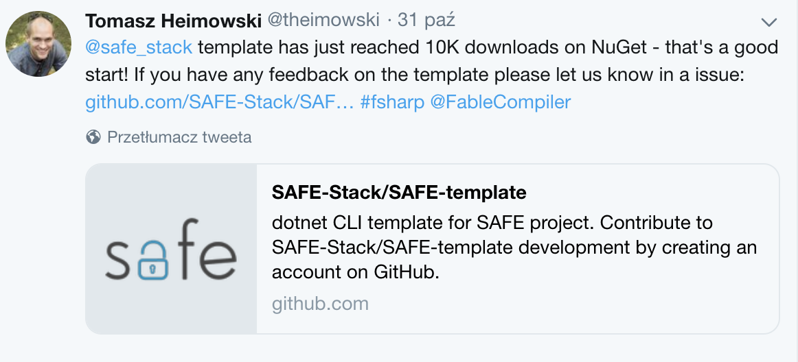

SAFE Template - a year retrospective
In this blog entry, we'll take a look at SAFE Template - how it got created, what's the current state and what does it take to release a stable 1.0 version.
Motivation
SAFE is an end-to-end F# stack for web development, that emphasizes type-safety. If you've never heard about it, visit the homepage and docs to read more.
SAFE Stack as an initiative has been officially launched in September 2017 at Fable Conf 2017. SAFE BookStore example app has been around even before that, but it used a different code name. At certain point, the maintainers of SAFE BookStore decided it would be nice to have a minimal application, possibly as a template for other people to bootstrap their own SAFE projects.
Since I really liked the idea of combining F# for both server and client side code, and establishing the "SAFE Stack" seemed a good selling point to me, I gave it a go. That's how SAFE Template was born.
Templating engine
Together with the new .NET SDK, there appeared a .NET Templating Engine which served the sole purpose of creating new .NET projects from scratch. As the ecosystem is adapting this concept quickly, it seemed to be the obvious way to distribute the SAFE Template.
Working with the templating engine was not that straight-forward, mainly due to the fact there is still little documentation and available resources on the topic. To me, most helpful appeared following sites:
- .NET Templates samples - a GitHub repository with dozen of sample projects showcasing various features of .NET Templating engine,
- Runnable Project Templates Wiki - and "in-depth" wiki documentation on important details for developing a .NET template.
Current state
As of now, SAFE Template has reached version 0.39 and has passed 10.000 of downloads on NuGet

It comes with a wide variety of options, all of which you can browse here.
You can also type dotnet new safe --help to see the options in your console.
Obviously every new feature to the template might potentially bring more attraction. However also each new option adds a significant amount of complexity for template to maintain. That's why always we think twice before adding anything new.
We still haven't released version 1.0, so there's still a room for breaking changes.
Road to 1.0
What do breaking changes in context of a .NET template mean anyway? Good question! There's a couple of things that we'd like to make stable before reaching 1.0:
- CLI interface - when a template option is present in version 1, we won't change / remove it,
- Tooling - we'd like to use both FAKE and Paket as dotnet tools, however as of now we still haven't decided on the final recommended set up for these,
- Scripts - ideally we'd like to have a standard set of FAKE Build targets for both production / development builds,
- WebPack configuration - this area is still a bit unknown to me, but hopefully we can unify with webpack-config-template, which is a recommended configuration for standalone Fable apps.
In addition to that there are also some key points that we want to address with 1.0:
- better adoption - that's probably quite clear that users may be afraid of using any tool which hasn't reached a stable version yet,
- Saturn 1.0 - as Saturn is now a recommended server option and it's currently in version 0.8, we'd like to wait before it reaches a stable version as well,
- outstanding issues - obviously, along the way we'll make our best to fix all bugs that arise.
Credits
I'd like to thank all 28 contributors (as of time of writing - hopefully there'll be more!) to the SAFE template (order by no. commits):
- theimowski (me)
- isaacabraham
- Zaid-Ajaj
- theprash
- 0x53A
- forki
- vasily-kirichenko
- psfinaki
- MangelMaxime
- AkosLukacs
- WalternativE
- matthid
- CallumVass
- jeremyabbott
- marcpiechura
- rmunn
- kunjee17
- vilinski
- colinbull
- nojaf
- MNie
- t-smirnov
- landy
- dsyme
- pkese
- JorgeVV
- Slesa
- alfonsogarciacaro
That's all for now. Till next time!